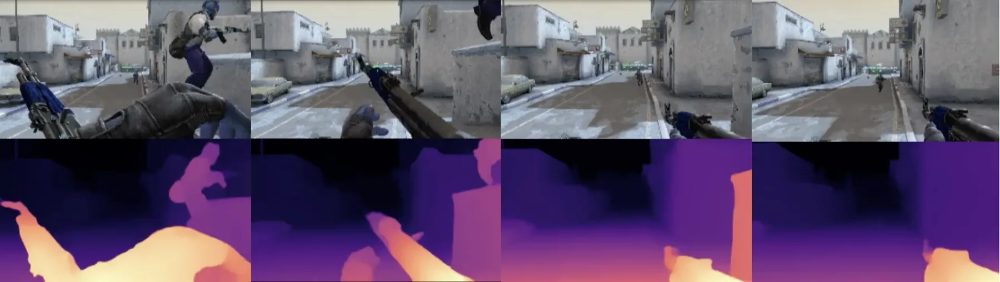
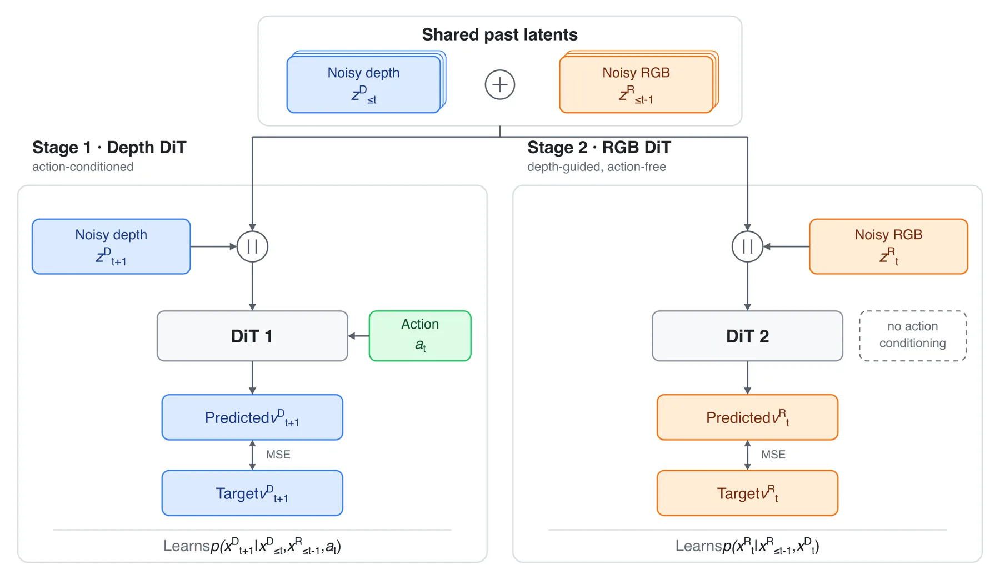
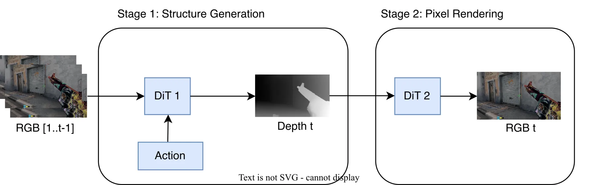

在扩散世界模型中解耦外观与几何：错帧 RGB–深度两阶段方案
Decoupling Appearance and Geometry in Diffusion World Models
把联合 RGBD 扩散模型按时间错帧拆成两个专门化的 DiT：第一阶段是动作条件化的深度 DiT，预测 p(x^D_{t+1} | x^D_{≤t}, x^R_{≤t−1}, a_t)；第二阶段是无动作、以当前深度为条件的 RGB DiT，预测 p(x^R_{t+1} | x^R_{≤t}, x^D_{t+1})，两者用同一噪声水平与 diffusion forcing 训练以逼近联合分布。数据为 CS:GO Dust 2 约 550 万帧（约 96 小时、16 FPS、150×280 反射填充到 160×280），5M 训练 / 0.5M 验证，动作是 51 维 one-hot，深度由 MiDaS DPT-Hybrid 估计；VAE 为 ViT 自编码器（patch 10，16×28×16 隐变量，训练 80 万步、batch 24、单张 H100 约 8 天）。在 2,400 段验证视频上的对比：仅 RGB 基线的 FVD 52.8 / FID 10.1 / PSNR 18.7 / LPIPS 0.35 / SSIM 0.49；联合 RGBD 为 54.2 / 11.5 / 18.5 / 0.38 / 0.49，深度 AbsRel 340.3、δ1.25 44.2；两阶段为 53.1 / 11.1 / 18.5 / 0.36 / 0.48，深度 AbsRel 318.1、δ1.25 44.9。也就是说，两阶段在深度指标上优于联合 RGBD（AbsRel 318.1 对 340.3、δ1.25 44.9 对 44.2），但在 RGB 指标上并未超过仅 RGB 基线。
depth AbsRel
FVD comparison
dataset scale
depth δ1.25
作者、单位与技术谱系 · Research context
作者与单位
研究脉络
- Oasis 与 CS:GO Dust 2 世界模型一系方法基座关系：本文的 VAE 与 DiT 结构沿用 Oasis 架构（针对 Dust 2 分辨率与隐变量分词重新训练），并在同一 CS:GO Dust 2 数据集上与 Diamond、Vid2World 等前作对比，以保持可比性。[官方 HTML 全文（第 4.1–4.2 节）]
- Diffusion Forcing 与 v-prediction上游工作关系：时间自回归训练机制来自 diffusion forcing（对未来的含噪版本做预测），并采用 v-prediction 参数化以提升训练稳定性；本文的两个阶段都用同一噪声水平与同一 forcing 设定，以逼近联合模型。[官方 HTML 全文（第 2–3 节）]
- 深度引导视频世界模型（结构引导一侧）上游工作关系：本文引用「深度等结构引导对视频世界建模很有帮助」的一系工作，但指出既有方法要么把 RGB 与深度联合训练、要么需要动作监督维持时间连贯，因此提出错帧解耦来同时保留几何接地与无动作扩展能力。[官方 HTML 全文（第 1 节）]
合作网络
- 单作者稿件的机构与实习背景Rajit Rajpal（University of Edinburgh） → Qubit Analytics关系：实习期间完成的工作（作者自述）[官方 HTML 全文（致谢）]
- 对 Oasis 架构与 MiDaS 深度估计的技术依赖本文的两阶段模型 → Oasis（VAE/DiT 架构）、MiDaS DPT-Hybrid（深度估计）关系：明确技术依赖（第三方模型与架构）[官方 HTML 全文（第 4.1–4.2 节）]
- 代码发布状态（待核验）论文摘要 → 作者自述的 GitHub 代码关系：作者自述的代码可用性声明（未在本地产物中核验）[官方 HTML 全文（摘要末句）]
作者、单位与实习背景来自论文首页与致谢（论文报告的事实，作者自述的实习关系按自述记录）；lineage 中的「基座/上游」定位来自第 1–4 节的表述与引用（基于来源的解读）；论文没有披露导师或所属课题组关系，因此不作此类推断；代码可用性按论文声明记录但地址未在本地核验。
方法本质拆解 · What actually changed
是不是微调？——两个 DiT 从头训练，可扩展性实验里冻结第一阶段只微调第二阶段
主实验训练三个可比的模型变体（仅 RGB、联合 RGBD、两阶段），都用同一 VAE、同一 DiT 主干与相同的动作条件化与优化日程；VAE 另行训练 80 万步。可扩展性实验里冻结已训练的第一阶段深度 DiT，只微调第二阶段 RGB DiT，以模拟「无动作标签数据」上的继续训练。因此「权重是否改过」的答案是：主干全部从头训练，扩展实验只改第二阶段权重。
有没有额外约束？——错帧时序 + 两条条件独立假设 + 共享噪声水平
结构约束有三：深度相对 RGB 前移一帧，使几何未来只依赖过去几何、错后一帧的过去外观与动作；外观未来在给定目标深度后与动作、过去几何条件独立，从而允许第二阶段无动作训练；两个 DiT 在训练时接收同一采样噪声水平与与联合模型一致的拼接输入，使分解在训练分布上等价于联合模型的一个因式分解。约束作用在条件依赖图上，而不是通过损失项强行对齐两个模态。
推理/后端到底做了什么？——两阶段顺序采样，DDIM 自回归滚动
推理不是单次前向：先把上下文帧编码进 VAE 隐空间，第一阶段按给定动作序列自回归生成未来深度隐变量，第二阶段再把同时刻的预测深度作为条件（通道拼接）生成 RGB 隐变量，使用 DDIM 采样。也就是说几何先被决定、外观随后被条件化，整条 rollout 由动作序列驱动深度、再由深度驱动外观；没有额外的优化、重投影或后处理模块，若深度支出错会直接传播到外观支。
方法本质是什么？——用条件独立假设把「几何—外观」联合分布拆成两步，并让标签需求只落在几何一侧
本质是把联合 RGBD 世界模型的生成过程重新因式分解：先由动作与几何历史决定几何，再由几何决定外观，从而让外观模型不再需要动作标签。它改变的是条件依赖结构与标签使用方式，而不是表示能力；明确没有做的是：没有用真值几何替代估计深度、没有消除两阶段串联的误差累积与错帧造成的分布错配，也没有给出可信的性能结论（表 1 与摘要冲突）。
输入/先验 = CS:GO Dust 2 视频（5M 训练帧、51 维 one-hot 动作）+ MiDaS DPT-Hybrid 估计深度 + VAE 隐空间（16×28×16）与 diffusion forcing；改变的位置 = 把联合 RGBD 的生成过程按错帧因式分解为动作条件化深度 DiT 与深度引导、无动作的 RGB DiT；约束或合并动作 = 深度相对 RGB 前移一帧、两条条件独立假设、两个 DiT 共享同一噪声水平并顺序采样；直接效果 = 深度 AbsRel 由联合模型的 340.3 降到 318.1、δ1.25 44.9 对 44.2，但 FVD/FID 未超过仅 RGB 基线（52.8/10.1），摘要中「改善 RGB 保真度」的说法与表 1 不一致。

桥接价值Bridge
桥接价值
本文的问题设定对你的路线有借鉴价值：把「几何」与「外观」分开建模，并让只有几何那一支需要动作标签，从而可以拿大量无动作视频去扩展外观模型。这在多源融合里对应一个常见诉求——把需要严格物理/几何约束的部分与只影响观感或上下文的部分分离，避免为了用上更多数据而牺牲几何一致性。不过它的实验强度有限，摘要与表格数字不一致，因此更适合作问题设定与条件化写法的参考，而不是可直接引用的性能结论。
方法与模块Method
方法摘要
做法是先写一个假设的联合 RGBD 扩散 Transformer（通道拼接、diffusion forcing 训练，下一步 RGB 条件在含噪的 RGB 与深度历史上），再把深度相对 RGB 前移一帧，得到两个非对称条件关系：深度下一步依赖过去深度、错后一帧的过去 RGB 与动作；RGB 下一步依赖过去 RGB 与当前的预测深度。随后引入两条条件独立假设（几何演化与同时刻外观无关；外观生成在给定目标深度后与动作和过去几何无关），把联合分布分解成两个专门化 DiT：动作条件化深度 DiT 与深度引导、无动作的 RGB DiT，训练时两者都接收同一噪声水平下与联合模型一致的条件输入，推理时顺序执行（先生成深度，再以其为条件生成 RGB）。
可迁移模块
第一，可迁移「错帧条件化」这一设计模式：让强约束量（几何/物理量）先被预测、再作为条件去约束弱约束量（外观/纹理），可以在不共享全部标签的前提下保持二者对齐——你在做几何引导的外观恢复或纹理补全时可以考虑同构安排。第二，「只有第一步需要动作标签」的可扩展性论证可以迁移到你的多源训练：把需要强监督的模块压缩到最小，其余模块用无标签数据扩展。第三，可迁移「用条件独立假设把联合模型分解、并用相同噪声水平训练两个子模型以逼近联合分布」的做法，这一思路适合用来在因子图/多阶段管线中论证分解的合理性，而不只是工程上拆成两个网络。

证据Evidence
关键证据与数字
数据与训练（第 4.1–4.2 节）：CS:GO Dust 2 约 550 万帧 / 约 96 小时 / 16 FPS / 150×280（反射填充至 160×280），5M 训练与 0.5M 验证；51 维 one-hot 动作；深度用 MiDaS DPT-Hybrid 估计；VAE 训练 80 万步、batch 24、单张 H100 约 8 天。模型对比（表 1，2,400 段验证视频）：仅 RGB 基线 FVD 52.8、FID 10.1、PSNR 18.7、LPIPS 0.35、SSIM 0.49；联合 RGBD FVD 54.2、FID 11.5、PSNR 18.5、LPIPS 0.38、SSIM 0.49，深度 AbsRel 340.3、δ1.25 44.2；两阶段 FVD 53.1、FID 11.1、PSNR 18.5、LPIPS 0.36、SSIM 0.48，深度 AbsRel 318.1、δ1.25 44.9。外部对照：Diamond FVD 368.5 / FID 87.2 / PSNR 18.1，Vid2World FVD 106.6 / FID 17.5 / PSNR 18.7。可扩展性（第 4.4 节）：冻结第一阶段、仅在无动作的增广 RGB 数据上微调第二阶段时，增广数据本身收益有限，作者改用「按比例预训练/微调同一数据」来模拟无标注场景，并称只微调 RGB 阶段仍能改善质量。
边界与下一步Limits & Next Step
边界与风险
第一，本文最重要的风险是论述与证据不一致：摘要在没有任何限定词的情况下声称「同时改善深度精度与 RGB 保真度，优于完全联合模型与仅 RGB 基线」，但表 1 显示两阶段在 FVD（53.1 对 52.8）与 FID（11.1 对 10.1）上都不如仅 RGB 基线，PSNR 持平、LPIPS 略差（0.36 对 0.35），只有在深度指标上优于联合 RGBD（AbsRel 318.1 对 340.3）。因此「改善 RGB 保真度」这一半主张在论文自身表格中不成立（待核验，需作者澄清）。第二，作者自己承认深度是外部估计的，不完美的深度会让深度 DiT 失效；两个模型串联会累积误差，且错帧造成两个 DiT 之间存在分布错配。第三，稿件质量提示：正文中留有未完成的引用占位（例如「in Fig」「CITE」），部分章节缺少图表编号，说明这是早期预印本，数字与结论应以官方仓库复现为准。第四，论文只在一个游戏数据集上评测，跨域（真实视频、机器人场景）外推未验证。
下一步实验
如果你考虑借用「错帧解耦」这一设定，建议先做一次成本极低的对照：在同一数据上比较三种条件化——只有几何支（深度）条件化、只有外观支条件化、以及本文的双支顺序条件化——并把 RGB 与几何指标分开报告，避免出现本文这种「几何变好被当成整体变好」的叙述。其次，把深度来源换成真值深度与估计深度两档，量化「深度不完美导致几何支失效」的边界，这一条作者只是定性承认、没有给出曲线。最后，由于作者声称无动作标签的第二阶段可以扩展，值得用一个独立的小规模无标签集验证：冻结第一阶段、只微调第二阶段，是否能同时保住几何指标与外观指标，还是两者发生取舍。

